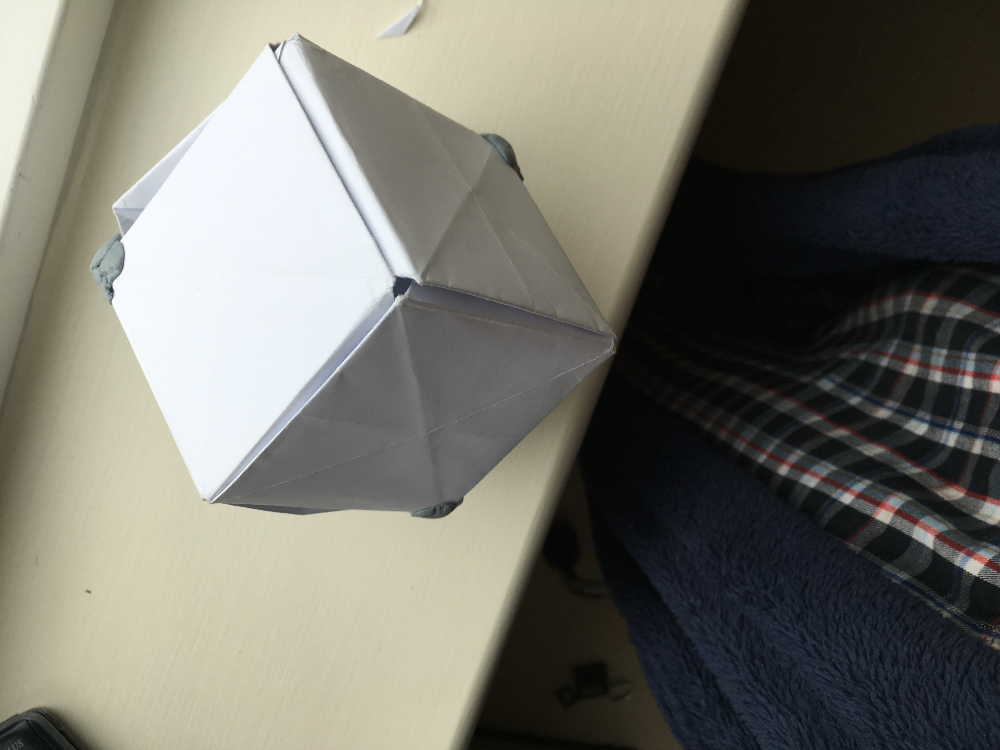
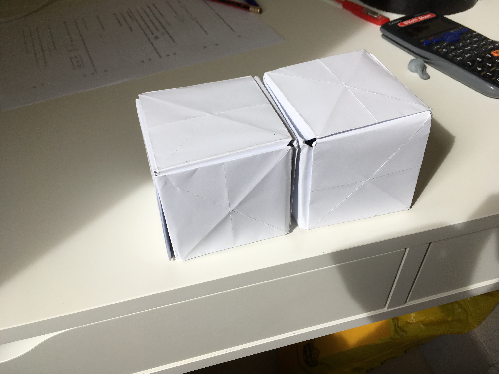
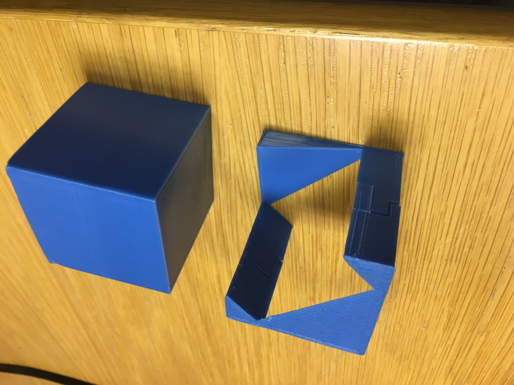

The Prince Rupert Cube works on the basis that a cube viewed from a corner can have a larger orthographic projection than a square with the same side-length
To start with I took two Sonobe Cubes and cut half the hole in one.
Sadly, I quickly found that paper was not very well suited to this task and making a 1:1 ratio of inner to outer cube would be extremely difficult with this medium
Since the advent of 3D printing, the 1:1 model is rendered facile. Here the outer ring is in two parts to reduce the supports necessary, increasing the quality and strength of the print
